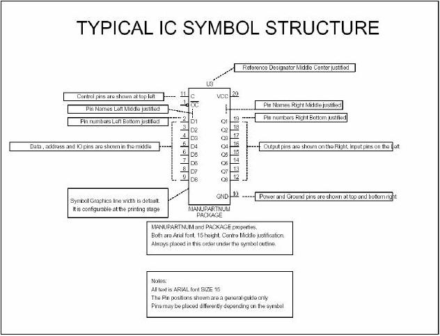
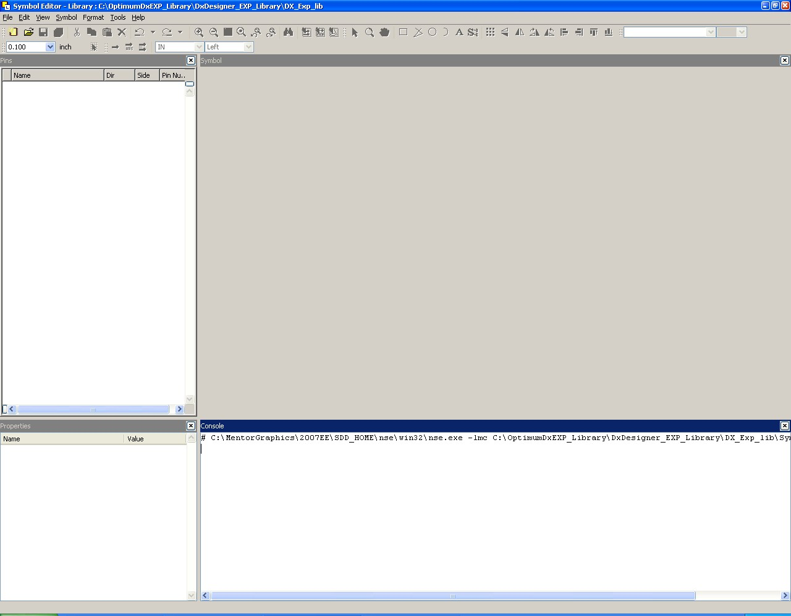
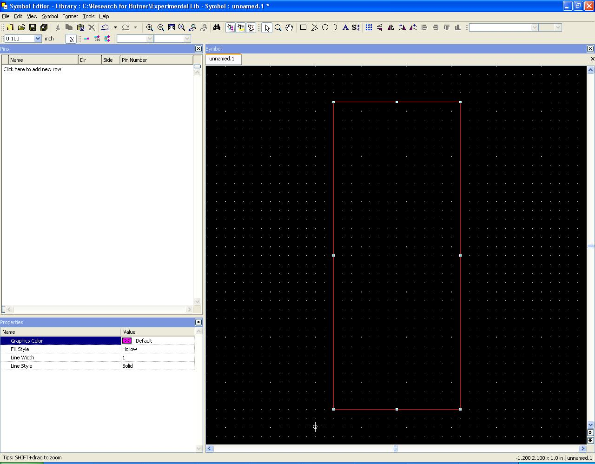
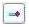
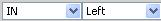
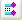
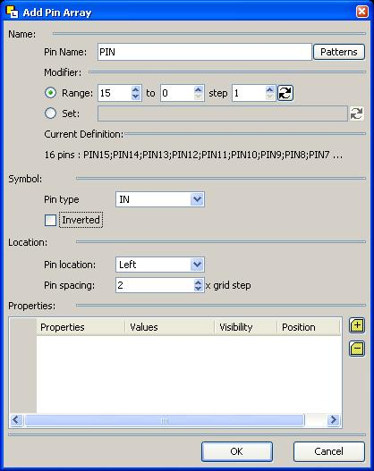

Symbol Creation Tutorial:
Symbols are one of two components that comprise a
Part. The Symbol is
used in the
DxDesigner portion while drawing up the schematic of your board. The schematic is used to
show how the Parts
are connected to one another in a readable way, thus, it is not
necessary to
create a Symbol that looks like your part.
In fact it is often times better to make your symbols
conforming to a
standard procedure.
Below is a picture taken from the ODA library documentation. In this picture is listed how they created all of their symbols with some small descriptions of what is placed there. Since you will be using the ODA libraries, you might want to create any new parts similar in fashion.

(Typical IC Symbol Structure)
After taking a look at the above you may choose to design your symbols how you like, however it is recommended that you follow the above method of drawing symbols to make it easier for your professor to help you.
Now that you have an idea of how Symbols are organized in the ODA library, lets get to making yours. Open up the Library manager and then open up the symbol Editor by using the tools menu link. The following screen should be what you see now

(1-start)
Click File->new and now a new symbol outline is in front of you. You may adjust the size of the pre-made box by simply left clicking on a line of the box and then the adjustment boxes will appear. Click on any of those white boxes on the outline of your symbol to adjust the size it.
The properties menu on the bottom right of the screen shows the name and several other properties for your Symbol.

(2-new symbol)
Make sure that the Symobl Type field lists MODULE as this means there are no other Symbols this is built from. In addition, the Foreard PCB field should be set to True.
Rename your Symbol as you see fit, however note that there can be NO SPACES in the name.
Max_3314 is acceptable
Max 3314 is NOT acceptable and will crash the library manager program whenever you attempt to access that symbol after creation. (silly huh?)
Now to its time to add some pins.

(3-add pins)
The image above is the button to add a single pin to your symbol (by recommendation use the pin array button described further on in the tutorial. It is far more powerful a tool to use and it makes things easier later on). By clicking this button, a pin will attach itself to the cursor and will be placed on the symbol with a left click. When a new pin is added you may notice that they appear in the Pins field to the left of your symbol. In this field you can rename the pins, change the direction of the pins, and you may also make the pins right or left. The following image located near the add pins button will also allow you to change the direction and orientation of the pins.

(4-add pins modifiers)
You may continue to add more pins with more left clicks until you are finished, wherein you may press the ‘esc’ key to quit placing pins.

(5-add pin array)
The above image is used to add a pin array. When clicked, an add pin array wizard will pop up.

(6-add pin array wizard)
This wizard will allow you to place as many pins as you desire in one column. The Pin name field will allow you to specify a common name for all of the pins you place and the range field will automatically label each pin with a corresponding number. As you have probably thought, this is close to worthless because you will want your each pin to be named according to the names of the pins on the spec sheet. By clicking on the ‘Set’ field you will be able to name every pin individually. If you chose to use the Set field, remember that the first pin will still have the prefix from the Pin Name field at the top of the wizard. While using the Set Field, remember that the semi-colon “;” separates the name of one pin from the next pin.
Once you have finished labeling all the pins in the column, you will be ready to place them. Click the OK button and the array of pins will be attached to your cursor, awaiting a left click to know where to place the pins.
If you are following the Typical IC Structure recommended at the beginning of this tutorial, then you will find it easy to specify all your inputs in a column, and then run the wizard again to specify all of your outputs.
Do not worry too much about the spacing between the pins as the pins can be manually moved if the spacing is not exact.
NOTE: the pin array wizard allows for further customization of the pin orientation, what kind of pins they are, and the spacing between the pins.
Now to name your creation
(7-add text button)
The above image is for those of you who want to add a name to your symbol. The properties of your symbol already have a name, but by adding text, you will not have to look at the properties of the symbol to find out what the name of it is when you are creating your schematic. Simply click button located about the top-middle of the screen and then left-click at the point that you want your text to start. After writing something down, the properties of the text may be edited on the lower left hand field in order to change the font, size, color, and alignment.